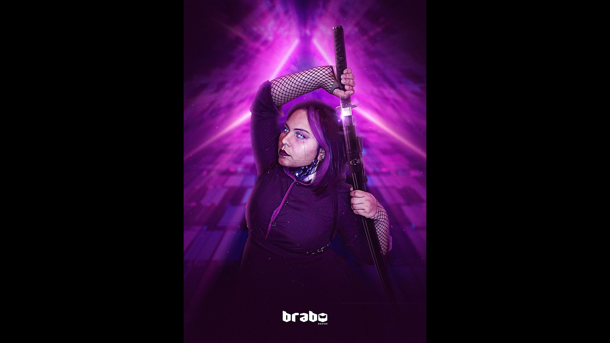

Paleta Neon & Magenta
O contraste entre tons de magenta saturado e sombras densas cria uma volumetria futurista agressiva e envolvente, direcionando o olhar para a empunhadura e os olhos da guerreira.
A colisão entre a disciplina ancestral da espada e o futurismo cibernético, orquestrada em luzes de neon e texturas complexas.

01 / RACIONAL
Esta peça materializa o choque entre duas eras: ao unir a disciplina da Katana com a estética dos implantes cibernéticos, cria-se uma narrativa visual onde passado e futuro colidem.
A força do projeto reside na execução técnica do photobashing: a manipulação de luz e textura foi calibrada para garantir que elementos orgânicos (rosto, tecidos) e sintéticos (metais, implantes, cabos) coexistam no mesmo universo sem rupturas perceptíveis.
02 / COMPOSIÇÃO
Três decisões centrais guiaram a direção de arte e a volumetria da personagem:
O contraste entre tons de magenta saturado e sombras densas cria uma volumetria futurista agressiva e envolvente, direcionando o olhar para a empunhadura e os olhos da guerreira.
Tratamento microscópico de reflexos metálicos na lâmina e nos implantes, equilibrados com a suavidade e porosidade da pele humana em primeiro plano.
A postura em guarda fechada e o enquadramento fechado comunicam tensão iminente, estabelecendo um universo cinematográfico rico em um único quadro estático.
